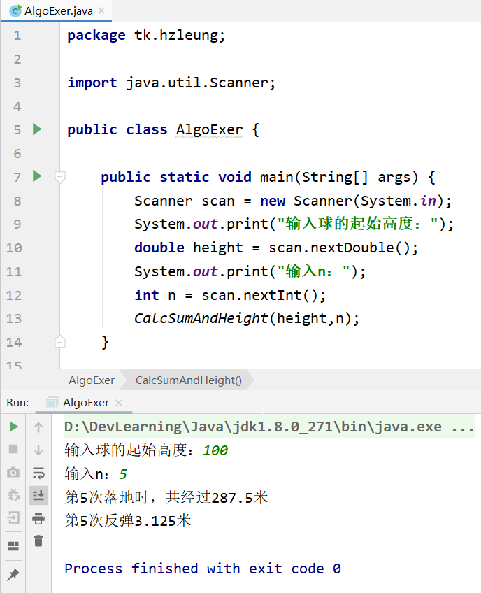

题目
一球从h米高度自由落下，每次落地后反跳回原高度的一半；再落下，求它在第n次落地时，共经过多少米？第n次反弹多高？
解析
代码展示
1
2
3
4
5
6
7
8
9
10
11
12
13
14
15
16
17
18
19
20
21
| public static void main(String[] args) {
Scanner scan = new Scanner(System.in);
System.out.print("输入球的起始高度：");
double height = scan.nextDouble();
System.out.print("输入n：");
int n = scan.nextInt();
CalcSumAndHeight(height,n);
}
public static void CalcSumAndHeight(double height,int n){
double sum = height;
for(int m = 2;m <= n;m++){
height = height / 2;
sum += height * 2;
}
System.out.println("第" + n + "次落地时，共经过" + sum + "米");
System.out.println("第" + n + "次反弹" + height / 2 + "米");
}
|
运行结果
